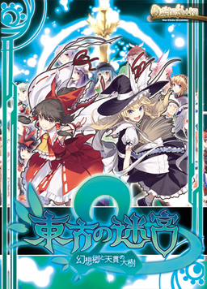

- Welcome to Touhou Wiki!
- Please register to edit. For assistance, check in with our Discord server or IRC channel.
Labyrinth of Touhou 2
| 東方の迷宮 幻想郷と天貫の大樹 Labyrinth of Touhou 2 | |
|---|---|
|
 | |
| Developer | |
| Publisher | |
| Released |
Comiket 84 |
| Genre |
Role-Playing Game |
| Gameplay |
Single-player story mode |
| Platforms | |
| Requirements |
CPU speed 1.80GHz, RAM 512MB, VRAM256MB, 220MB HDD space. |
Labyrinth of Touhou 2 (東方の迷宮 幻想郷と天貫の大樹, romanized Touhou no Meikyuu: Gensokyo to Tennuki no Daiju), also known as Touhou Labyrinth 2, is a sequel to the first Labyrinth of Touhou game. Similar to its predecessor, it is an RPG-dungeon crawler similar to the Etrian Odyssey games, featuring Touhou characters and shout-outs to many other RPGs, anime series, and danmaku shooters.
Gameplay[edit]
Like its predecessor, the game is based around exploring large, mazelike floors of a many-floored dungeon via a Reimu avatar. Each floor is home to various events, including conversations, treasure, boss fights, and other happenings. Battles with various enemies take place throughout the game; combat is time-based, using a party of 4 battlers and 8 reserve characters, each with their own special traits and abilities. Much of the game's strategy is based around choosing and managing your team.
Story[edit]
After a giant tree suddenly appears in the middle of Gensōkyō, Reimu Hakurei, the shrine maiden in charge of preserving the balance of the land of fantasy, and Marisa Kirisame, an ordinary magician only looking to laze her days around, found themselves in the Human Village, where they went to meet Keine Kamishirasawa, a half beast teacher, who gave herself the job of protecting the village. Following after her is the half-youkai owner of Kōrindō, Rinnosuke Morichika, who tells them about another incident; his shop has been broken into, but not only that, the Ame-no-Murakumo, a legendary sword in his possession has been taken, and is most likely hiding in the magical tree.
And so, due to their endless courage (but mostly due to Keine's nagging), our two heroines, bringing with them the concerned Were-Hakutaku and forcefully dragging a disheartened shop keeper, make their way into the Great Tree to solve once and for all this incident.
Additional information[edit]
External links[edit]
- Labyrinth of Touhou 2 main page
- Labyrinth of Touhou 2 Plus Disk main page
- Japanese Wiki
- English Translation Patch (requires version 1.203)
- Plus Disk English Translation Patch (ver 1.103), the translation is still incomplete, but most of the stuff is translated.